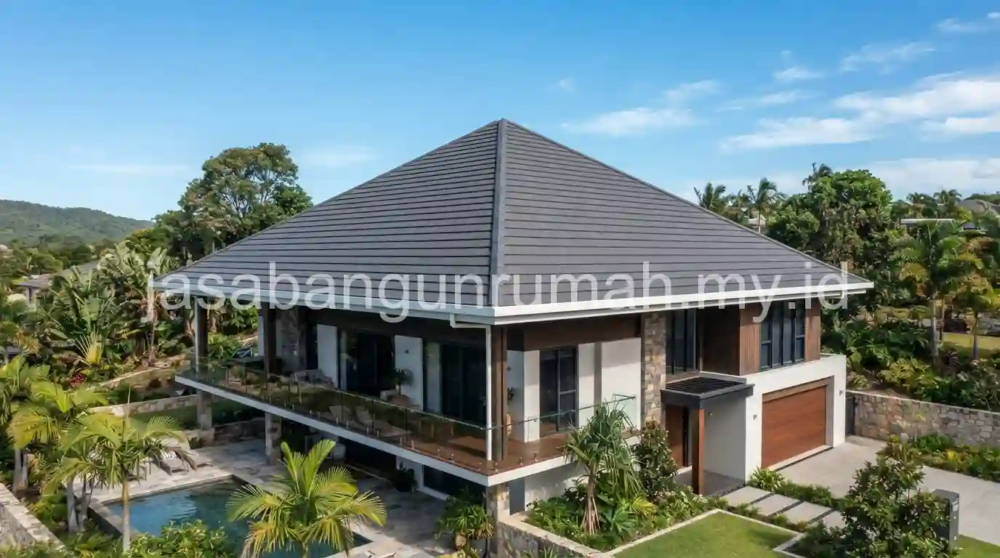

Daftar Isi
Atap pelana dan atap perisai menggunakan genteng keramik ber-glazur umumnya lebih andal menahan curah hujan tinggi dibandingkan atap flat beton cor yang rentan mengalami retak rambut seiring waktu.
Apa Keunggulan Atap Pelana untuk Daerah dengan Curah Hujan Tinggi?
Atap pelana memiliki bentuk dua bidang miring yang bertemu pada satu garis nok di bagian atas, sehingga air hujan dapat mengalir dengan cepat ke dua arah tanpa banyak titik pertemuan yang berpotensi menjadi celah kebocoran.
Bentuk atap ini tergolong paling sederhana secara struktur, sehingga jumlah sambungan antar bidang atap relatif lebih sedikit dibandingkan bentuk atap yang lebih kompleks. Semakin sedikit sambungan pada struktur atap, semakin kecil pula risiko munculnya titik kebocoran baru di kemudian hari, terutama pada daerah dengan intensitas hujan yang tinggi dan berlangsung dalam durasi lama.
Kombinasi atap pelana dengan kemiringan curam di atas tiga puluh lima derajat semakin memperkuat kemampuannya mengalirkan air hujan secara cepat, sehingga air tidak sempat menggenang atau meresap melalui sela-sela genteng meski hujan turun dengan intensitas deras dalam waktu berjam-jam. Bentuk ini juga relatif lebih mudah dan ekonomis dari sisi pengerjaan rangka dibandingkan bentuk atap dengan banyak sisi kemiringan.
Apa Keunggulan Atap Perisai Dibandingkan Atap Pelana pada Kondisi Tertentu?
Atap perisai memiliki empat bidang miring yang menutup seluruh sisi bangunan, berbeda dengan atap pelana yang menyisakan dua sisi berbentuk segitiga terbuka pada bagian ujungnya, sehingga atap perisai memberi perlindungan yang lebih menyeluruh terhadap dinding di seluruh sisi rumah.
Perlindungan menyeluruh ini menjadi keunggulan tersendiri pada rumah yang berdiri di lahan terbuka tanpa banyak penghalang di sekelilingnya, karena angin kencang yang membawa air hujan dari berbagai arah tetap dapat ditahan oleh keempat sisi atap perisai, dibandingkan atap pelana yang lebih rentan pada sisi segitiga terbukanya apabila angin bertiup dari arah tersebut.
Meski demikian, struktur atap perisai umumnya membutuhkan rangka yang lebih kompleks dibandingkan atap pelana, karena pertemuan antar empat bidang miring pada bagian sudut membutuhkan perhitungan dan pengerjaan yang lebih presisi agar tidak menjadi titik lemah kebocoran. Pemilihan antara kedua bentuk ini sebaiknya mempertimbangkan kondisi lahan, arah angin dominan, serta anggaran yang tersedia untuk pengerjaan rangka atap.

Mengapa Genteng Keramik Ber-Glazur Direkomendasikan untuk Kedua Bentuk Atap Ini?
Genteng keramik ber-glazur memiliki lapisan permukaan mengkilap yang membuat air hujan lebih mudah meluncur turun dibandingkan genteng tanpa lapisan glazur, sekaligus mengurangi penyerapan air ke dalam pori material genteng itu sendiri.
Lapisan glazur ini juga membuat permukaan genteng lebih sulit ditumbuhi lumut atau jamur dibandingkan genteng tanpa lapisan pelindung, sehingga tampilan atap tetap terjaga meski terus-menerus terpapar kelembapan tinggi khas daerah dengan curah hujan ekstrem. Selain aspek fungsional, genteng keramik ber-glazur juga tersedia dalam berbagai pilihan warna yang tetap dapat disesuaikan dengan konsep fasad rumah minimalis modern.
Pemasangan genteng jenis ini tetap membutuhkan ketelitian pada bagian tumpang tindih antar genteng serta area nok dan jurai, karena kesalahan pemasangan pada bagian tersebut dapat menjadi titik kebocoran meski material genteng yang digunakan sudah berkualitas baik. Perhatian pada detail pemasangan ini sama pentingnya dengan pemilihan bentuk atap dan jenis genteng itu sendiri.
Mengapa Atap Flat Beton Cor Lebih Rentan Bocor Dibandingkan Atap Miring?
Atap flat beton cor memiliki permukaan yang relatif datar dengan kemiringan sangat landai, sehingga air hujan cenderung menggenang lebih lama di permukaannya dibandingkan atap dengan kemiringan curam seperti atap pelana atau perisai.
Genangan air yang berlangsung lama pada permukaan beton meningkatkan tekanan air ke dalam pori-pori material, terutama apabila muncul retak rambut akibat pemuaian dan penyusutan material beton yang terjadi secara alami akibat perubahan suhu antara siang dan malam hari. Retak rambut ini seringkali tidak terlihat jelas secara kasat mata, namun cukup menjadi jalur masuk air hujan yang lambat laun merembes ke dalam struktur di bawahnya.
Pada daerah dengan curah hujan sangat tinggi seperti Bogor, risiko ini menjadi lebih signifikan karena frekuensi hujan yang lebih sering membuat permukaan atap flat beton cor lebih jarang memiliki waktu untuk benar-benar kering sebelum diguyur hujan berikutnya. Kondisi ini mempercepat proses kerusakan lapisan waterproofing yang biasanya diaplikasikan di atas permukaan beton, sehingga membutuhkan perawatan dan pengecekan berkala yang lebih intensif dibandingkan atap miring berbahan genteng.
Meski atap flat beton cor tetap memiliki daya tarik dari sisi tampilan modern minimalis, pemilihannya untuk daerah dengan curah hujan ekstrem sebaiknya disertai perencanaan sistem waterproofing berlapis serta pemeriksaan berkala yang lebih ketat dibandingkan menggunakan atap pelana atau perisai berbahan genteng keramik ber-glazur yang secara alami lebih unggul dalam mengalirkan air hujan tanpa mengandalkan lapisan pelindung tambahan.
Bagi pemilik rumah di daerah dengan curah hujan tinggi yang ingin memastikan pemilihan bentuk dan material atap paling sesuai dengan kondisi lahan, dapat ajukan form penawaran untuk berkonsultasi dengan tim yang berpengalaman menangani desain atap tahan bocor.